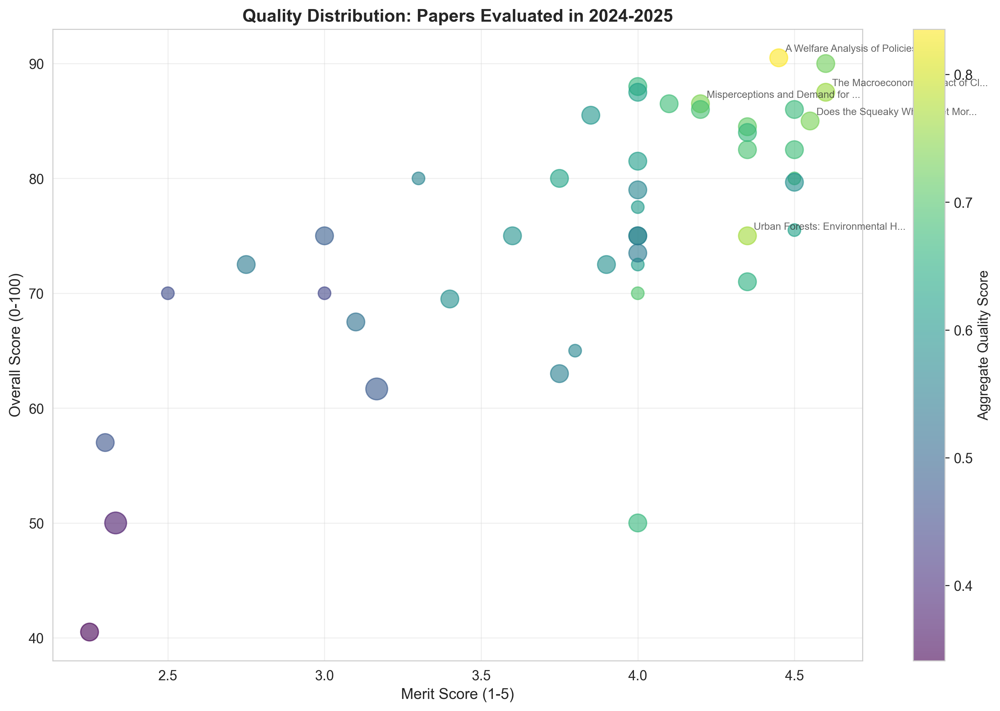
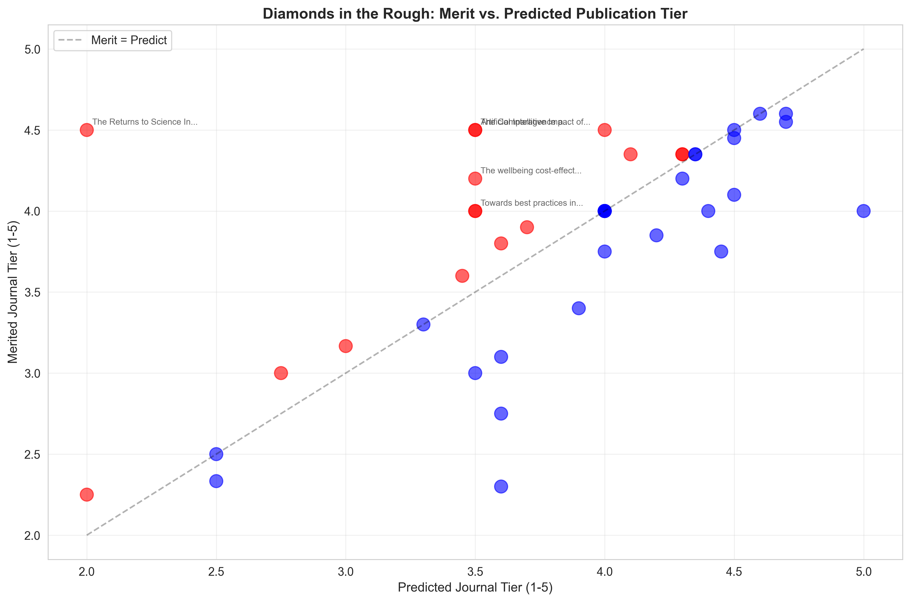
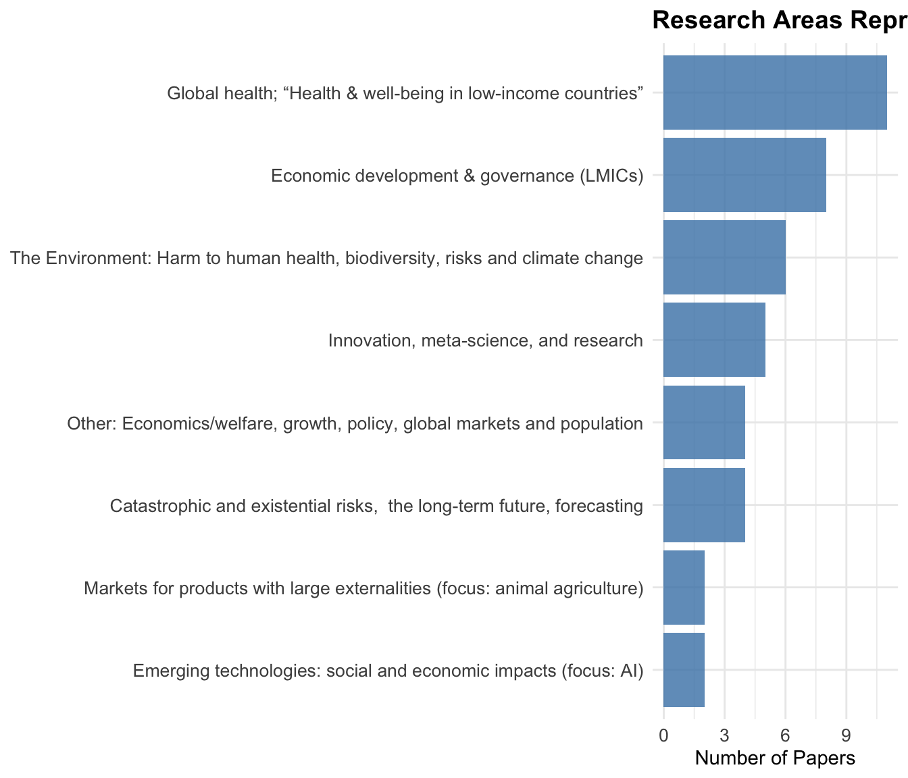

**Papers evaluated:** 45 **Mean merited journal tier score:** 3.84 /5.0**Mean overall rating:** 75.5 /100**Papers scoring 4.5+ on merited journal tier:** 8 **Papers with diamond scores ≥0.5:** 7 David Reinstein with Claude Code assistance
December 29, 2025
The Unjournal is revolutionizing academic peer review by providing public, rigorous evaluations of research that matters for global priorities—before it’s locked behind journal paywalls or delayed by traditional publishing timelines. Our evaluators don’t just assess research; they provide detailed, quantitative ratings across multiple dimensions, from methodological rigor to real-world relevance.
This post analyzes the 45 papers with full evaluations completed by The Unjournal in 2024-2025, identifying exceptional research based on:
This analysis was prepared with substantial assistance from Claude Code (Anthropic’s AI assistant). While Claude helped identify patterns, extract data, and draft content, all claims should be verified against the original evaluation summaries linked throughout.
Important caveats to keep in mind:
**Papers evaluated:** 45 **Mean merited journal tier score:** 3.84 /5.0**Mean overall rating:** 75.5 /100**Papers scoring 4.5+ on merited journal tier:** 8 **Papers with diamond scores ≥0.5:** 7 
The 2024-2025 cohort reflects The Unjournal’s global priorities focus: environmental and health research dominate, with substantial representation across development economics, democratic governance, and philosophy/ethics (see topic chart below).
The Unjournal’s value lies not just in ratings, but in the substantive exchange between evaluators and authors. The following papers demonstrate this dialogue at its best—cases where authors engaged deeply with evaluator critiques, leading to improved understanding even when final ratings varied widely.
Ratings: 50/100 vs. 85/100 (35-point evaluator disagreement) | Response: 10,246 words
This paper exemplifies productive scholarly tension. The first evaluation team (Sharma Waddington & Masset) gave detailed methodological critiques—questioning study inclusion transparency, undisclosed deviations from pre-registration, and policy implications—resulting in a 50/100 rating. The second evaluator found “no major technical issues” and rated it 85/100.
Rather than simply defend their work, the authors updated the working paper in response. The evaluation manager notes:
“The evaluators noted a number of ways that the paper could be improved, it in turn was improved, and while the headline result remains largely the same, we have now learned some new things about the stability of the results… I extend my sincere thanks to the evaluators and the authors for what I view as a fulfilling and transparent cooperative effort to reach the best possible answer to an important question.”
What this shows: High evaluator disagreement doesn’t indicate paper quality problems—it reflects genuine methodological debate. The 35-point split here represents different standards: rigorous meta-analysis methodology (E1) versus practical utility and cost-effectiveness contribution (E2).
Ratings: 64/100 vs. 75/100 | Response: 6,509 words
This evaluation produced what the manager called “a particularly rich public discussion of econometric identification issues.” Evaluator 1 raised fundamental concerns about the identification strategy, citing “bad controls and a shift-share design with endogenous shares.” Evaluator 2 (Bournakis) found the results “convincing” while suggesting robustness checks.
The authors (Arora et al.) responded with a sophisticated 6,500-word defense, directly engaging with advanced econometric theory—explaining why lagged, predetermined shares mitigate endogeneity concerns and why shift-share designs don’t require share exogeneity if shifts are exogenous.
What this shows: Even when evaluators fundamentally disagree about methodology, the resulting public exchange creates lasting scholarly value—a resource for anyone working on similar identification problems.
Ratings: 85/100 vs. 87/100 (aligned scores) | Response: 7,485 words
Unlike the papers above, these evaluators gave nearly identical overall scores. Yet their qualitative discussions reveal substantive disagreement masked by aligned numbers. Evaluator 1 praised the work’s rigor while flagging “ad hoc adjustments.” Evaluator 2 went further, calling many decisions “arbitrary and subjective” and recommending a “multiverse approach.”
The Happier Lives Institute authors responded in detail, defending their choices as “principled decisions with empirical bases rather than pure subjective guesses”—while also clarifying why systematic CEAs require judgment calls where academic consensus doesn’t exist.
What this shows: Similar ratings can mask different concerns. Reading only the numbers (85/87) misses the substantive methodological debate about how to handle unavoidable uncertainty in cost-effectiveness analysis.
Response: 3,192 words | Evaluation: 3 evaluators
This paper’s authors demonstrated intellectual humility in their response. Rather than defending every position, they:
“Commend the format and reviewer comments which were of extremely high quality… We value good epistemics and understand that it takes many people critically looking at a problem to achieve this, which is what motivated our participation in the Unjournal pilot.”
They acknowledged that their comparison with AGI safety needed clarification, accepted criticism about lack of sensitivity analysis for discount rates, and agreed their cost estimates were “likely low.”
What this shows: Substantive engagement doesn’t require defending every choice. Acknowledging limitations and suggesting future work can be as valuable as robust defense.
Aggregate Score: 0.84 (Highest in 2024-2025) | Merited journal tier: 4.45/5.0 | Overall: 90.5/100
This paper applies the Marginal Value of Public Funds (MVPF) framework to 96 US environmental policies, providing rigorous welfare rankings beyond simple cost-per-ton metrics.
Evaluator 1 (Johannes Emmerling):
“This is an excellent paper that makes significant contributions to climate policy evaluation. The authors’ application of the MVPF framework to analyze 96 US environmental policies provides valuable insights that traditional cost-per-ton metrics often miss.”
Evaluator 2 (Frank Venmans):
“Under which policy does a dollar of subsidy create the largest impact on welfare? The paper answers these questions by developing the Marginal Value of Public Funds (MVPF). This allows [one] to rank government policies according to their welfare impacts while respecting a given government budget.”
Author engagement: The authors declined to respond to evaluations but noted they may wish to do so at a later date.
Aggregate Score: 0.76 | Merited journal tier: 4.35/5.0 | Overall: 75/100
This paper examines urban forests’ environmental health benefits and risks, combining ecological and economic analysis.
Author engagement: The authors granted permission to evaluate this paper and were very responsive and encouraging throughout the process. They opted not to provide a formal response to the evaluations but remain open to future engagement.
Aggregate Score: 0.76 | Merited journal tier: 4.6/5.0 | Overall: 87.5/100
Estimates macroeconomic damages from climate change at 6x larger than previous estimates (12% vs. 2% GDP reduction per degree warming).
Evaluation highlight:
“Overall, the manuscript is well written in the sense that, since the reader understands immediately what is being estimated and why, they could be lulled into the trap of thinking that the research is ‘obvious.’ But it is the careful empirical construction of the argument, and the identification that a literature has been mechanically missing (netting out) the effect of global warming, that makes this research important.”
“The manuscript contains numerous robustness tests, including [some…] involving much work (such as re-estimation with a temperature measure independently created than the primary one), and clear explanations about why each was implemented.”
Author engagement: The authors were offered the opportunity to respond to these evaluations but declined.
Aggregate Score: 0.74 | Merited journal tier: 4.2/5.0 | Overall: 86.5/100 | Hours: 16
Field experiment in Turkey showing information interventions increased opposition vote share by 0.8 percentage points (1.5% relative increase).
Evaluation:
“This paper makes a valuable contribution to research on authoritarianism and democratic resilience by combining an online survey and a large-scale field experiment in Turkey… The study is theoretically ambitious, well-powered, and methodologically transparent, with the field experiment demonstrating real-world behavioral effects on opposition vote share.”
“I am inclined to believe this claim as the field experiment is well-powered, pre-registered, and analyzed using appropriate instrumental variable (2SLS) methods, which lends credibility to the causal inference.”
Author engagement: The authors were aware of the evaluation and kept evaluators updated on the most recent versions of their work. They were unable to commit to a formal response timeline.
DOI: 10.3386/w33018
Aggregate Score: 0.73 | Merited journal tier: 4.55/5.0 | Overall: 85/100
Published in American Economic Review. Innovative RCT on citizen reporting of pollution violations in China, capturing both direct and spillover effects.
Evaluation:
“This is clearly a very neat experimental design. All prefectures contain some treated firms, but the intensity of treatment (70% or 95% of firms assigned to treatment) varies so that they can assess the ‘general equilibrium’ effect.”
DOI: 10.1257/aer.20221215
Aggregate Score: 0.73 | Merited journal tier: 4.6/5.0 | Overall: 90/100
Large-scale experiment on immunization nudges, identifying most effective behavioral interventions.
Author engagement: The authors acknowledged the evaluations and declined to respond formally, noting that the paper had been accepted for publication in Econometrica.
Aggregate Score: 0.71 | Merited journal tier: 4.35/5.0 | Overall: 84/100
Tracks long-term impacts of psychotherapy on depression, beliefs, and economic outcomes.
Aggregate Score: 0.70 | Merited journal tier: 4.0/5.0 | Overall: 70/100
Examines whether conservation interventions work when accounting for general equilibrium effects.
Author engagement: The authors granted permission for evaluation under The Unjournal’s interim policy, appreciated the suggestions, and indicated they are working to address them in their next draft. They have expressed willingness to respond formally in the future.
Aggregate Score: 0.69 | Merited journal tier: 4.35/5.0 | Overall: 82/100
Randomizes unconditional cash transfer amounts in the US to understand marginal impacts.
Aggregate Score: 0.69 | Merited journal tier: 4.2/5.0 | Overall: 86/100
Systematic review and meta-analysis of psychotherapy cost-effectiveness, including charity-specific data from Happier Lives Institute.
Author engagement: The Happier Lives Institute authors provided a detailed and careful written response to the evaluations, engaging substantively with methodological critiques and defending their analytical choices as principled and conservative.
Papers where evaluators saw significantly higher potential than predicted journal placement (difference ≥0.5 on the 1-5 scale):

| Paper Title | Merited Journal Tier | Predicted Tier | Diamond Score |
|---|---|---|---|
| The Returns to Science In the Presence of Technological Risks | 4.5 | 2.0 | 2.5 |
| The Comparative Impact of Cash Transfers and a Psychotherapy Program on Psychological and Economic Well-being | 4.5 | 3.5 | 1.0 |
| Artificial Intelligence and Economic Growth | 4.5 | 3.5 | 1.0 |
| The wellbeing cost-effectiveness of StrongMinds and Friendship Bench: Combining a systematic review and meta-analysis with charity-related data | 4.2 | 3.5 | 0.7 |
| Towards best practices in AGI safety and governance | 4.0 | 3.5 | 0.5 |
| Advance Market Commitments: Insights from Theory and Experience | 4.5 | 4.0 | 0.5 |
| When Celebrities Speak: A Nationwide Twitter Experiment Promoting Vaccination In Indonesia | 4.0 | 3.5 | 0.5 |
Based on the data, seven papers have diamond scores ≥0.5:
The Returns to Science In the Presence of Technological Risks (Diamond: +2.5) - Merited journal tier: 4.5, Predicted: 2.0 - Largest gap between merit and predicted tier; evaluators saw exceptional methodological quality despite perceived challenges in traditional publication venues
The Comparative Impact of Cash Transfers and Psychotherapy (Diamond: +1.0) - Merited journal tier: 4.5, Predicted: 3.5 - Head-to-head comparison of interventions valued for rigorous design and policy relevance
Artificial Intelligence and Economic Growth (Diamond: +1.0) - Merited journal tier: 4.5, Predicted: 3.5 - Foundational economic growth theory applied to AI, recognized for long-term significance
The wellbeing cost-effectiveness of StrongMinds (Diamond: +0.7) - Merited journal tier: 4.2, Predicted: 3.5 - Rigorous meta-analysis valued higher than its predicted placement
#11: Adaptability and the Pivot Penalty in Science (0.69) - Merited journal tier: 4.5/5.0 - Examines costs and benefits of researchers pivoting between topics
#14: Artificial Intelligence and Economic Growth (0.67) - Merited journal tier: 4.5/5.0 - Economic growth theory applied to AI
#12: The Comparative Impact of Cash Transfers and Psychotherapy (0.68) - Merited journal tier: 4.5/5.0 - Head-to-head comparison of interventions
#13: Building Resilient Education Systems (0.68) - Merited journal tier: 4.1/5.0 - Evidence from large-scale randomized trials across five countries
#15: Universal Basic Income (0.67) - Merited journal tier: 4.35/5.0 - Short-term results from long-term experiment in Kenya
#17: Intergenerational Child Mortality Impacts of Deworming (0.66) - Merited journal tier: 4.0/5.0 - 20-year follow-up showing intergenerational effects
#18: Population ethical intuitions (0.65) - Merited journal tier: 4.05/5.0 - Survey evidence on population ethics
Not all ratings carry equal confidence. When interpreting the rankings below, consider:
Papers where evaluators gave similar scores (merit_std ≤ 0.2) represent our most reliable assessments:
Some highly-rated papers have important uncertainty caveats:
**Single-evaluator papers (*)**—Higher ratings but only one perspective:
High-disagreement papers (†)—Evaluators saw different strengths:
When comparing papers, consider:
Effective confidence = raw_merit - uncertainty_penaltyA paper with merit 4.6 and std 0.14 is more reliably excellent than one with merit 4.5 and std 0.71. Single-evaluator papers, while potentially accurate, lack the validation of multiple independent assessments.
Every top-rated paper demonstrates:
Papers scoring highest provide actionable insights:
Evaluators praised:
Papers receiving most thorough evaluations (12-16 hours) scored highest, suggesting: - Evaluators invest time proportional to quality - Detailed assessment identifies genuine strengths - Thorough feedback potential for improvement

The distribution aligns with The Unjournal’s focus on high-impact research for global priorities. Environmental and health economics dominate—reflecting urgent climate and public health challenges—while democracy, development, and existential risk research receive substantial attention.
These evaluations demonstrate The Unjournal’s unique value:
1. Public, Detailed Feedback Instead of anonymous accept/reject decisions, authors and readers see exactly what evaluators think, with evidence and reasoning.
2. Quantitative Ratings Multi-dimensional scoring reveals strengths and weaknesses more precisely than traditional reviews.
3. Timely Assessment Many papers evaluated as working papers, providing feedback before traditional journal review.
4. Focus on Impact Criteria like “real-world relevance” and “global priorities relevance” ensure practical importance matters.
5. Transparent Disagreement When evaluators disagree, both perspectives are public, enriching discourse.
**Papers with merited journal tier ≥ 4.0:** 28 (62%)**Papers with merited journal tier ≥ 4.5:** 8 **Total evaluations:** 83 **Average evaluations per paper:** 1.8 The 45 papers evaluated by The Unjournal in 2024-2025 showcase research that matters: rigorous methods applied to consequential questions, from climate policy and democratic governance to poverty reduction and long-term development.
These papers earned high ratings through:
As The Unjournal continues expanding coverage, patterns will emerge: Which research areas consistently produce higher-quality work? Does evaluation depth predict research impact? Can we identify “diamonds in the rough” earlier?
For now, these 45 papers represent exceptional research—and they’re all publicly accessible, with detailed evaluations available for anyone to read.
Analysis conducted using data current as of December 29, 2025. Papers are those with evaluation ratings submitted to the database from January 2024 through December 2025. All evaluation excerpts quoted from public Unjournal evaluations at unjournal.pubpub.org.